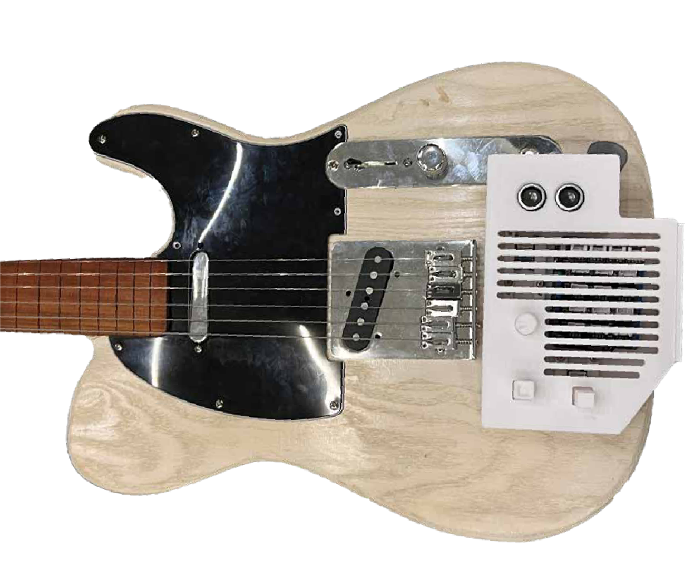
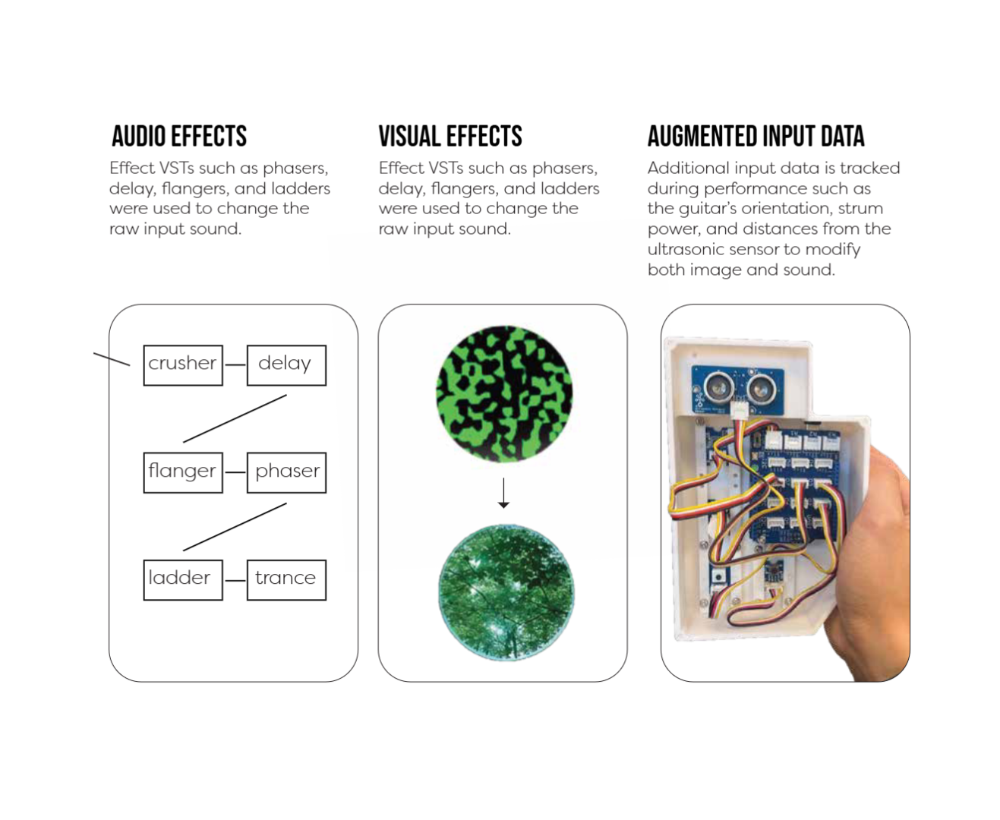
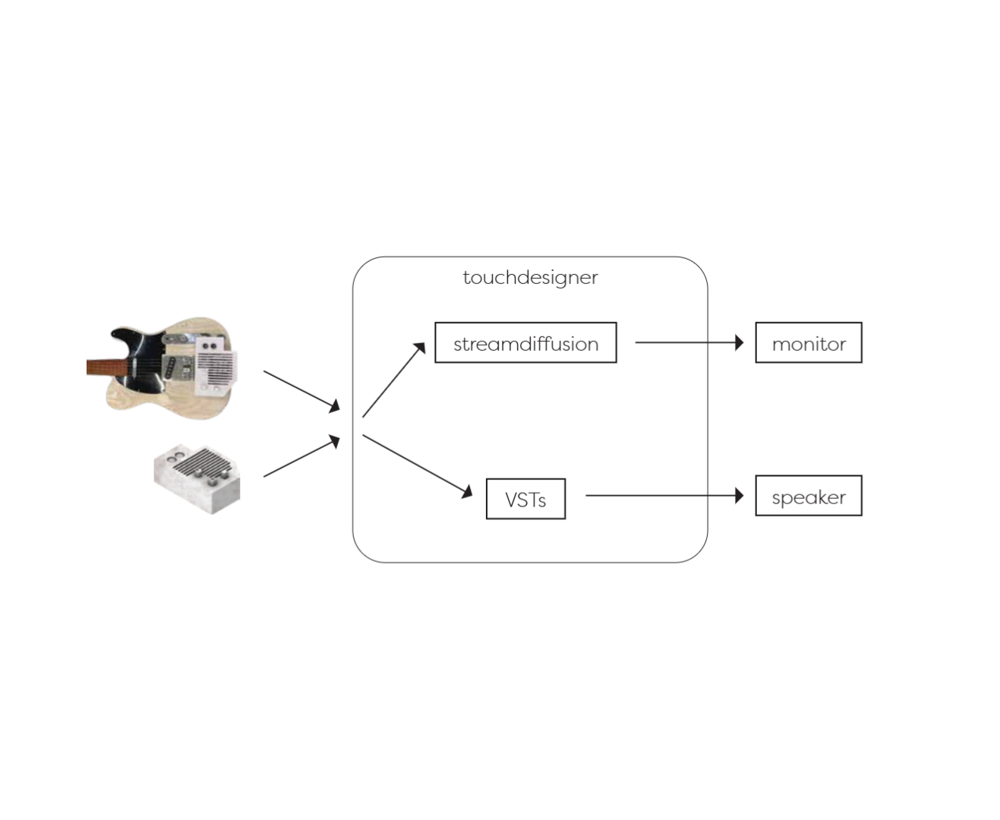
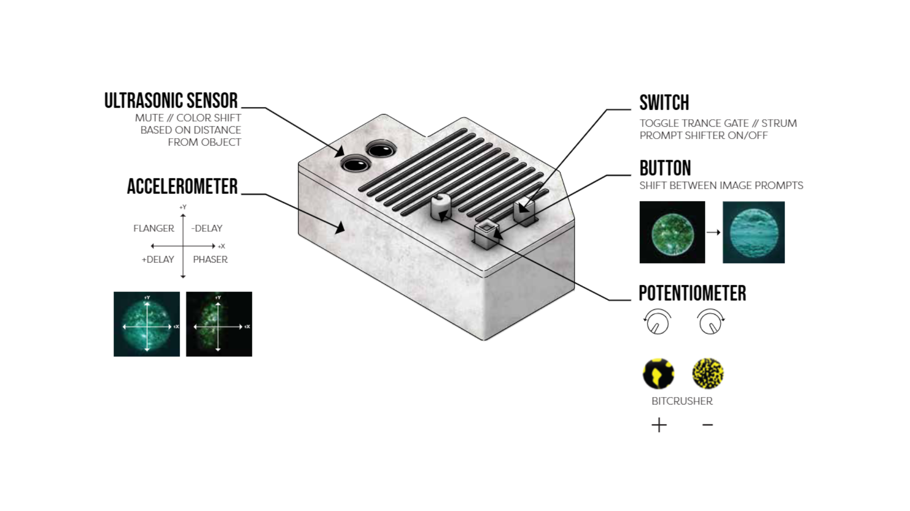

Demonstration
Can new senses of synesthesia be achieved through augmenting act of playing a guitar? Using an electric guitar and various arduino sensors, these analog inputs are interpreted as digital data to be used into TouchDesigner and translated into an audio and visual output through VSTs and Streamdiffusion.
Audioreactive Visuals
Prototyping



